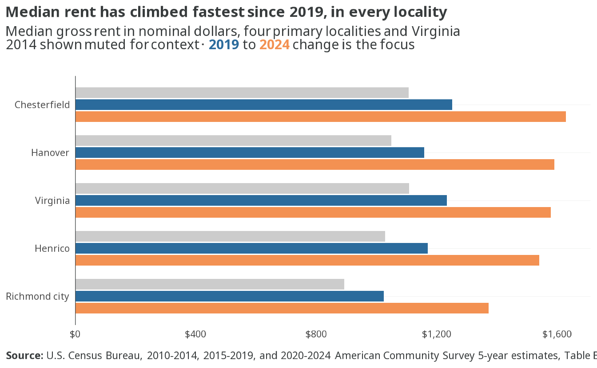
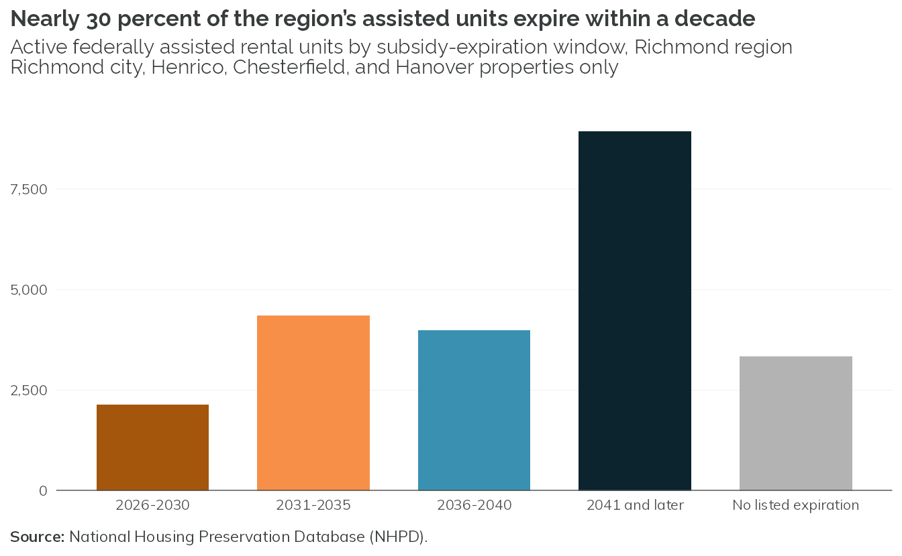
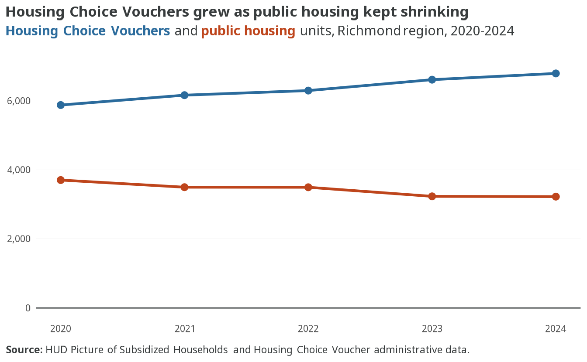

3 Rental market
3.1 Median rent has climbed fastest since 2019, in every locality
- Every primary locality posted a higher median gross rent in 2024 than in 2019, and in all four the 2019-to-2024 increase outpaced the full 2014-to-2019 span.
- Chesterfield had the highest 2024 median gross rent among the four primary localities at $1,629.
- Richmond city’s median rent rose 34 percent since 2019, from $1,025 to $1,372 — yet stayed below the statewide median of $1,579.
- All figures are nominal dollars; inflation-adjusted comparisons come with the cost-burden analysis.
3.3 Asking rents are up 28 percent since 2020, even as the market has loosened

- Regional average asking rent reached $1,583 in 2026 Q2, up 28% from $1,235 in early 2020.
- The market was tightest in early 2022 — vacancy near 6%, the low point of the period — and rents have risen another 11% since then, to $1,583.
- Vacancy has since climbed to 8.5% in 2026 Q2, above where it stood at the start of 2020, as new deliveries caught up with and then outpaced demand.
NoteSince 2022
The 2022 Framework flagged a regional average asking rent of $1,395 in early 2022 as a two-decade high with vacancy near 5%. Rents have since risen another 11% to $1,583, but the market has loosened: vacancy is now 8.5%, and rent growth has slowed sharply. The 2022 Framework also reported a net loss of renter households from 2016 to 2020 (with a COVID-era data caveat); the 2020–2024 ACS instead shows renter households growing across the region.
3.4 Nearly 30 percent of the region’s assisted units expire within a decade

- About 6,491 of the region’s 22,745 active assisted units — 29% — carry subsidies expiring by 2035, the window preservation funders typically prioritize.
- Three-quarters of tracked properties (152 of 201) are LIHTC-financed, holding 17,465 units; LIHTC’s own affordability period can lapse independently of the subsidy end date tracked here, a second layer of risk this figure does not fully capture.
- Richmond city and Henrico account for the large majority of tracked properties in the four primary localities; Chesterfield and Hanover have smaller inventories.
- About 3,336 units carry no listed subsidy end date, mostly public housing and HOME-assisted properties whose affordability commitments do not lapse the same way project-based subsidies do.
3.5 Housing Choice Vouchers grew as public housing kept shrinking

- Housing Choice Vouchers grew 16% since 2020, from 5,879 to 6,795 units, while public housing fell 13%, from 3,706 to 3,226 — a policy-relevant shift from project-based to tenant-based assistance.
- Regional voucher utilization slipped from 91 percent occupied in 2020 to 87 percent in 2024, even as the voucher supply grew — more vouchers issued, a slightly larger share sitting unused at any given time.
- Project-based Section 8 (5,763 units in 2024) and the small 202/PRAC and 811/PRAC senior- and disability-designated programs (222 and 69 units) have stayed essentially flat since 2020.
- Richmond city and Henrico hold the large majority of the region’s assisted units among the four primary localities.
NoteTo be added
Submarket rents and vacancy. Submarket-level asking rent, vacancy, and new-construction rent detail, extending the regional trend above.